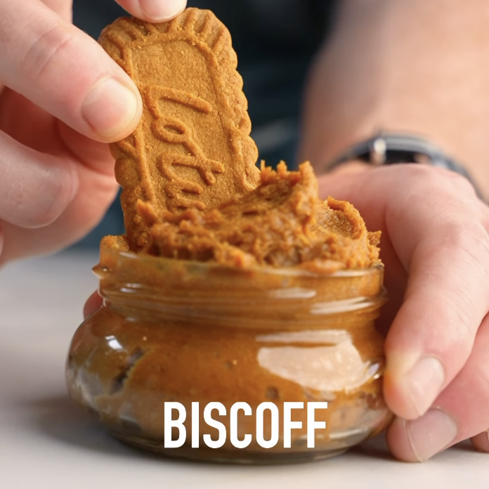

Biscoff Proteína
Ingredientes:
- 8 galletas Biscoff
- 1 scoop (30g) de proteína con sabor a galleta
- 1/4 taza de leche de tu elección
Instrucciones:
- Licua en una procesadora de alimentos las galletas
- Cuando queden como migas, añade la proteína y revuelve otra vez
- Finalmente, añade la leche